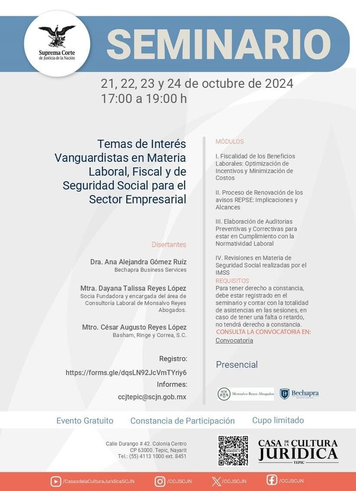

Casa de la Cultura Jurídica de Tepic, Nayarit
Temas de interés vanguardistas en materia laboral, fiscal y de seguridad social para el sector empresarial
- Proceso de renovación de los avisos REPSE: implicaciones y alcances.
- Elaboración de auditorías preventivas y correctivas para estar en cumplimiento con la normatividad laboral.